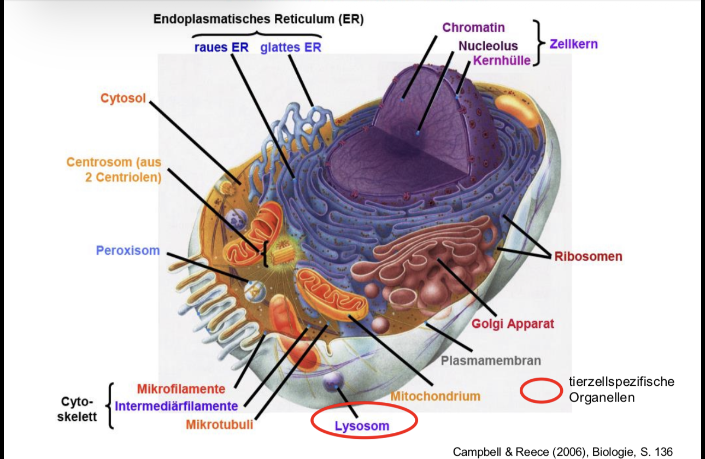
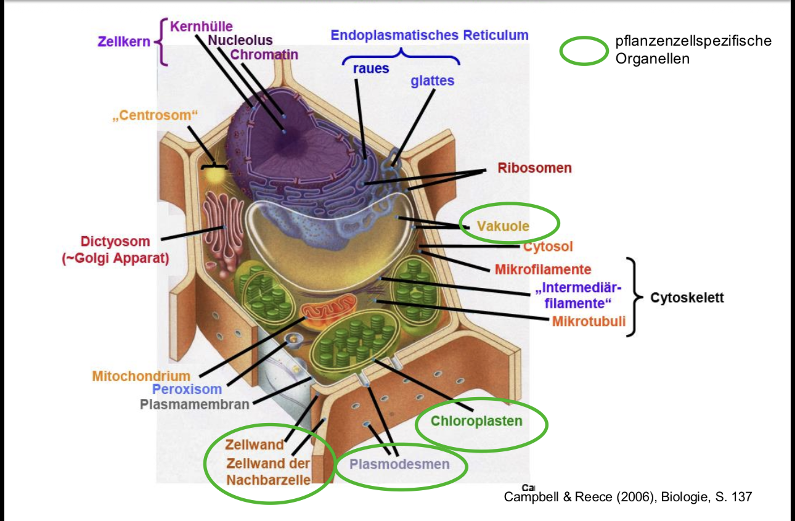
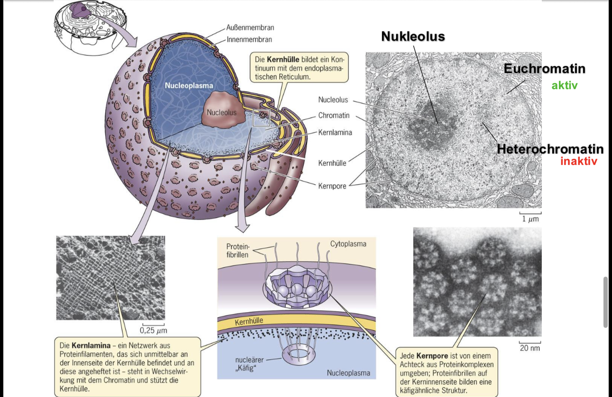
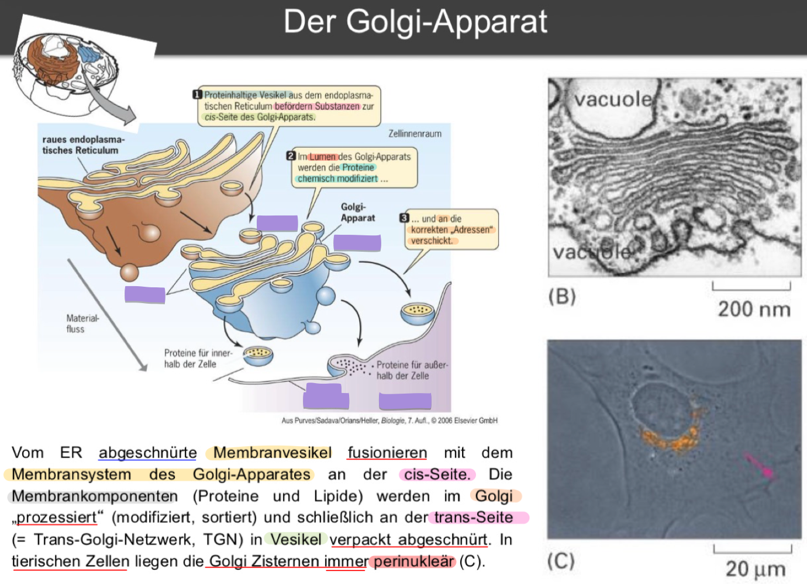
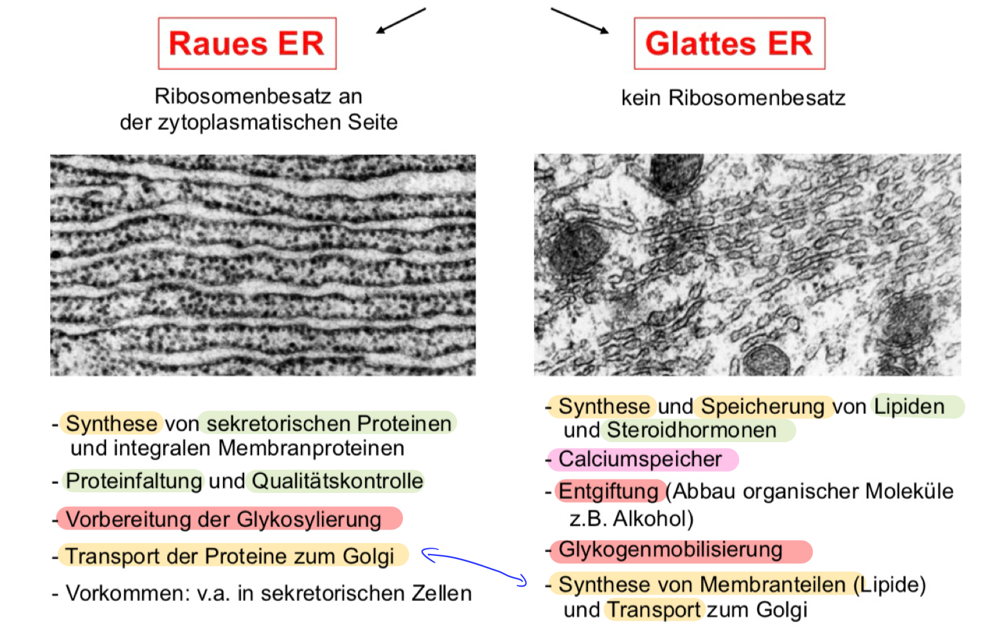
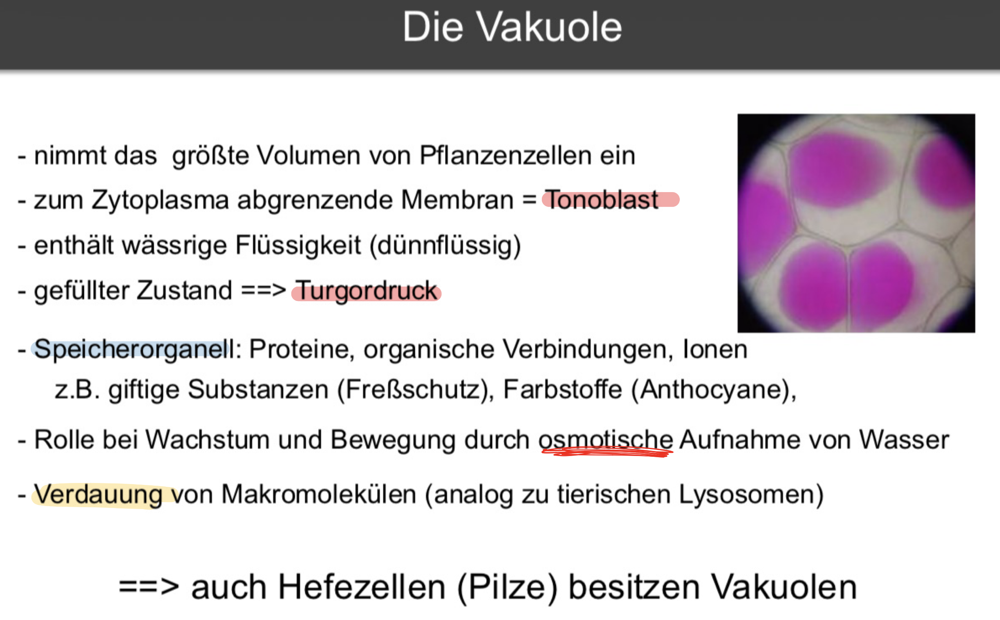
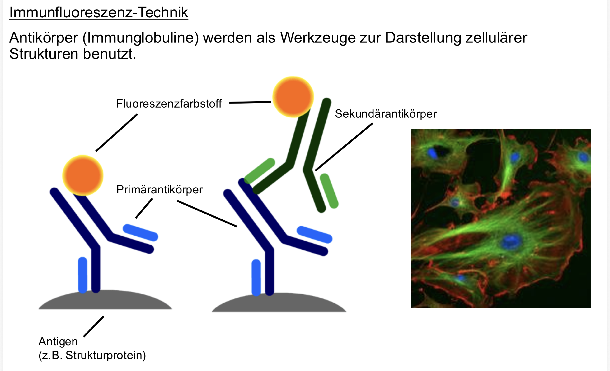
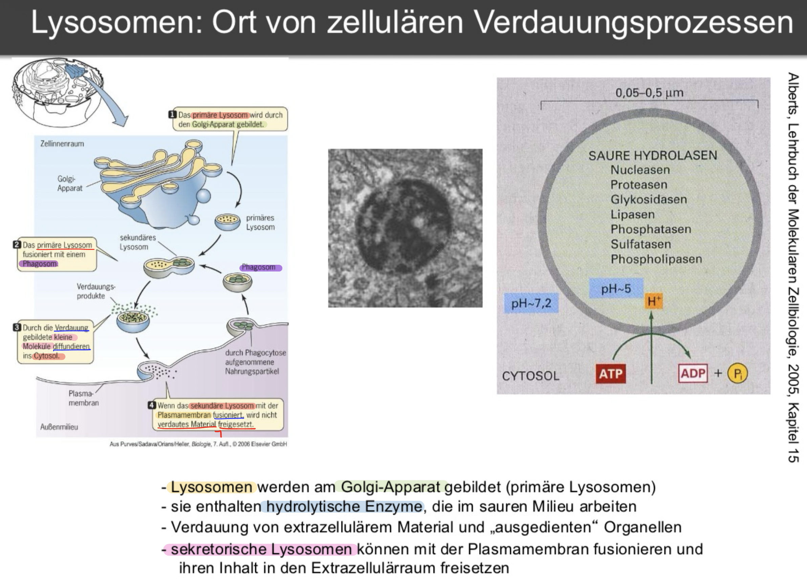

DNA POL bei Eukaryoten

Eukaryotische Replikationsgabel

- Helikase = Reißverschluss öffner
- RPA(Replication Protein A) = d. sind d. einzelstrangbindenden Proteine (ssb-Protein (Single-Strand Binding Protein)), d. d. Replikationsgabel aufhalten
- Pol $\epsilon$: $\underrightarrow{\ \ \ \ \textcolor{#d6b315}{\text{synthetisiert}}\ \ \ \ }$ Leitstrang
- Pol $\delta$: $\underrightarrow{\ \ \ \ \textcolor{#d6b315}{\text{synthetisiert}}\ \ \ \ }$ Folgestrang
- PCNA(Proliferating Cell Nuclear Antigen) $\underrightarrow{\ \ \ \ \textcolor{#d6b315}{\text{gibt Polymeasen}}\ \ \ \ }$ halt
- POL $\alpha$-Primase $\underrightarrow{\ \ \ \ \textcolor{#d6b315}{\text{setzt}}\ \ \ \ }$ Primer
- FEN1 (Flap Endonuclease) $\underrightarrow{\ \ \ \ \textcolor{#d6b315}{\text{schneidet}}\ \ \ \ }$ Primer am Ende weg
- DNA-Ligase $\underrightarrow{\ \ \ \ \textcolor{#d6b315}{\text{versiegelt}}\ \ \ \ }$ DNA-Strang
Wann weiß d. Zelle, dass d. Replikation zu Ende ist? (Termination)
- Wenn 2 Teams aufeinanderstoßen
- Vorteil $\to$ kein besonderen Signale notw.
Was sind Histonen-Oktamere ?
- D. ist das fertige Produkt aus einzelnen Histonen
- besteht aus $\underrightarrow{\ \ \ \ \textcolor{#d6b315}{\text{jeweils einer Kopie}}\ \ \ \ }$ v. 4 Proterinen
- $H2A$, $H2B$, $H3$ und $H4$.

Was kann geschehen, wenn d. nicht so läuft wie geplant ?
-
Progerie
- Was macht es ?
- Kinder $\underrightarrow{\ \ \ \ \textcolor{#d6b315}{\text{altern}}\ \ \ \ }$ schneller
- Grund ?
-
Ophtalmoplegia
- Was macht es ?
- Augenmuskelatur $\implies$ gelähmt
- Grund ?
-
Was genau wird mit Krebs assoziiert ?
- DNA Pol $\gamma$ mut.
- erhöhte Expression v. DNA $\beta$
Wrm. werden Telomere immer kürzer ?
- Primerentf. $\underrightarrow{\ \ \ \ \textcolor{#d6b315}{\text{verkürzt}}\ \ \ \ }$ Chromosomen $\underrightarrow{\ \ \ \ \textcolor{#d6b315}{\text{pro}}\ \ \ \ }$ Replikation

Wie verhindert d. Zelle dieses Problem ?
-
an den Enden $\underrightarrow{\ \ \ \ \textcolor{#d6b315}{\text{hinzugef.}}\ \ \ \ }$ Telomere $\underrightarrow{\ \ \ \ \textcolor{#d6b315}{\text{durch}}\ \ \ \ }$ Telomerasen $\underrightarrow{\ \ \ \ \textcolor{#d6b315}{\text{Grund}}\ \ \ \ }$ Verlustvermeidung
-
Telomere $\underrightarrow{\ \ \ \ \textcolor{#d6b315}{\text{bestehen}}\ \ \ \ }$ simplen, tandem-repetitiven Seq.
- Bsp. bei Mensch: $\color{red}(TTAGGG)_{n = ca. 2000}$

Telomerase
Das End-Replikationsproblem
Was ist das grundlegende Problem bei der Replikation linearer Chromosomen?
- lineare Chromosomen $\underrightarrow{\ \ \ \ \textcolor{#7abd2d}{\text{Problem}}\ \ \ \ }$ Primerentf. am Folgestrang $\underrightarrow{\ \ \ \ \textcolor{#7abd2d}{\text{Folge}}\ \ \ \ }$ Chromosomen verkürzen sich bei jeder Replikation
Was ist d. Lösung ?
- Chromosomenenden $\underrightarrow{\ \ \ \ \textcolor{#7abd2d}{\text{besitzen}}\ \ \ \ }$ Telomere (z.B. $TTAGGG_n$) $\underrightarrow{\ \ \ \ \textcolor{#7abd2d}{\text{verlängert durch}}\ \ \ \ }$ Telomerase $\underrightarrow{\ \ \ \ \textcolor{#7abd2d}{\text{Ergebnis}}\ \ \ \ }$ Kompensation des DNA-Verlusts
Was ist die Telomerase & wie funktioniert sie biochemisch?
- Telomerase $\underrightarrow{\ \ \ \ \textcolor{#7abd2d}{\text{ist ein}}\ \ \ \ }$ Ribonukleoprotein $\underrightarrow{\ \ \ \ \textcolor{#7abd2d}{\text{besteht aus}}\ \ \ \ }$ Protein ($TERT$) + RNA-Anteil ($TERC$)
- Enzym-Klasse $\underrightarrow{\ \ \ \ \textcolor{#7abd2d}{\text{wirkt als}}\ \ \ \ }$ Reverse Transkriptase $\underrightarrow{\ \ \ \ \textcolor{#7abd2d}{\text{nutzt}}\ \ \ \ }$ eigene RNA ($TERC$) als Matrize f. DNA-Synthese
- Arbeitsweise: Telomerase $\underrightarrow{\ \ \ \ \textcolor{#7abd2d}{\text{verlängert aktiv}}\ \ \ \ }$ den 3'-Überhang (Matrizenstrang) $\underrightarrow{\ \ \ \ \textcolor{#7abd2d}{\text{danach}}\ \ \ \ }$ Primase & DNA-Polymerase füllen den Folgestrang auf
Wie schützt die Zelle ihre offenen DNA-Enden vor dem Abbau oder falscher Reparatur?
- Telomer-DNA $\underrightarrow{\ \ \ \ \textcolor{#7abd2d}{\text{bildet}}\ \ \ \ }$
T-Loop (Schleife) $\underrightarrow{\ \ \ \ \textcolor{#7abd2d}{\text{Funktion}}\ \ \ \ }$ versteckt das offene Ende & reguliert Telomerase-Aktivität
SHELTERIN-Komplex (z.B. $TRF1/TRF2$) $\underrightarrow{\ \ \ \ \textcolor{#7abd2d}{\text{bindet an}}\ \ \ \ }$ T-Loop $\underrightarrow{\ \ \ \ \textcolor{#7abd2d}{\text{Funktion}}\ \ \ \ }$ versiegelt das Ende & schützt vor unbeabsichtigter DNA-Reparatur

Wie erkennen Telomerase-Enzyme, wo sie arbeiten müssen?
- Telomere $\underrightarrow{\ \ \ \ \textcolor{#7abd2d}{\text{prod.}}\ \ \ \ }$ long non-coding RNA ($TERRA$)
- verkürzte Telomere $\underrightarrow{\ \ \ \ \textcolor{#7abd2d}{\text{nutzen}}\ \ \ \ }$ $TERRA$ $\underrightarrow{\ \ \ \ \textcolor{#7abd2d}{\text{lockt an}}\ \ \ \ }$
Telomerase $\underrightarrow{\ \ \ \ \textcolor{#7abd2d}{\text{verhindert}}\ \ \ \ }$ vorzeitige Seneszenz
Warum altern unsere Zellen?
Somazellen $\underrightarrow{\ \ \ \ \textcolor{#7abd2d}{\text{schalten ab}}\ \ \ \ }$ Telomerase (n. d. Geburt) $\underrightarrow{\ \ \ \ \textcolor{#7abd2d}{\text{Folge}}\ \ \ \ }$ Telomere verkürzen sich stetig- Kritische Verkürzung $\underrightarrow{\ \ \ \ \textcolor{#7abd2d}{\text{führt zu}}\ \ \ \ }$ Teilungsstopp (Hayflick-Limit, ca. 100 Mitosen) $\underrightarrow{\ \ \ \ \textcolor{#7abd2d}{\text{Ergebnis}}\ \ \ \ }$ Zelluläre Seneszenz
Welche Zellen altern nicht und warum?
- Keimzellen & Krebszellen $\underrightarrow{\ \ \ \ \textcolor{#7abd2d}{\text{besitzen}}\ \ \ \ }$ aktive Telomerase $\underrightarrow{\ \ \ \ \textcolor{#7abd2d}{\text{Folge}}\ \ \ \ }$ unbegrenzte Zellteilung (unlimited proliferation)
- Somazellen $\underrightarrow{\ \ \ \ \textcolor{#7abd2d}{\text{Telomere abgestellt}}\ \ \ \ }$ ist eine evolutionäre Strategie $\underrightarrow{\ \ \ \ \textcolor{#7abd2d}{\text{Zweck}}\ \ \ \ }$ Tumorunterdrückung (da 85% aller Tumore Telomerase+ sind)


DNA-Amplifikation
Wie und warum kommt es zur gezielten DNA-Amplifikation in Eukaryoten?
- Physiologisch $\underrightarrow{\ \ \ \ \textcolor{#7abd2d}{\text{nutzt}}\ \ \ \ }$ selektive Über-Replikation definierter Genom-Abschnitte $\underrightarrow{\ \ \ \ \textcolor{#7abd2d}{\text{Zweck}}\ \ \ \ }$ Erhöhung der Gendosis für starke Proteinproduktion (z.B. rRNA-Gene in Amphibien-Oocyten)
- Pathologisch $\underrightarrow{\ \ \ \ \textcolor{#7abd2d}{\text{passiert bei}}\ \ \ \ }$Mutationsereignissen in Krebszellen $\underrightarrow{\ \ \ \ \textcolor{#7abd2d}{\text{Folge}}\ \ \ \ }$ Amplifikation von Onkogenen (sichtbar als HSR oder "Double Minutes")
Was sind Onkogene?
- natürl. Gene, d wachstumsfördernd sind
- geben Zelle d. Signal zur Teilung
Wie stoppen Medikamente wie Acyclovir oder AZT die Virusvermehrung?
- Medikament $\underrightarrow{\ \ \ \ \textcolor{#7abd2d}{\text{besteht aus}}\ \ \ \ }$
Nukleotidanaloga (synthetische Arzneistoffe, d. natürl. Bausteinen von DNA/RNA ähneln, aber modifiziert sind) $\underrightarrow{\ \ \ \ \textcolor{#7abd2d}{\text{eingebaut durch}}\ \ \ \ }$ virale Polymerasen / Reverse Transkriptase (z.B. $AZT$ bei $HIV$) $\underrightarrow{\ \ \ \ \textcolor{#7abd2d}{\text{Folge}}\ \ \ \ }$ Kettenabbruch bei viraler Replikation
Wie wird der Übergang zwischen den verschiedenen Zellzyklus-Phasen gesteuert?
- Zellzyklus $\underrightarrow{\ \ \ \ \textcolor{#7abd2d}{\text{kontrolle durch}}\ \ \ \ }$
CDK-Cyclin-Komplexe
- Komplex-Aufbau $\underrightarrow{\ \ \ \ \textcolor{#7abd2d}{\text{besteht aus}}\ \ \ \ }$
Cyclin (regulatorisches Protein) + $CDK$ (cyclinabhängige Kinase)
- Mechanismus $\underrightarrow{\ \ \ \ \textcolor{#7abd2d}{\text{aktiver Komplex}}\ \ \ \ }$ phosphoryliert Zielproteine $\underrightarrow{\ \ \ \ \textcolor{#7abd2d}{\text{Ergebnis}}\ \ \ \ }$ Auslösung des nächsten Zellzyklus-Schritts (z.B. Eintritt in die S-Phase)
Wie verhindert der "Wächter des Genoms" (p53) die Replikation von defekter DNA?
-
DNA-Schaden $\underrightarrow{\ \ \ \ \textcolor{#7abd2d}{\text{führt zur}}\ \ \ \ }$ Aktivierung von p53 $\underrightarrow{\ \ \ \ \textcolor{#7abd2d}{\text{aktives p35}}\ \ \ \ }$ bindet an Regulationsbereich des p21-Gens $\underrightarrow{\ \ \ \ \textcolor{#7abd2d}{\text{Zelle prod.}}\ \ \ \ }$ p21 (ein Cdk-Inhibitorprotein) $\underrightarrow{\ \ \ \ \textcolor{#7abd2d}{\text{p21 blockiert}}\ \ \ \ }$ den Cyclin-Cdk-Komplex der S-Phase $\underrightarrow{\ \ \ \ \textcolor{#7abd2d}{\text{Ergebnis}}\ \ \ \ }$ Eintritt in S-Phase wird verhindert
-
Kinasen aktiviert & Inhibitoren blockieren